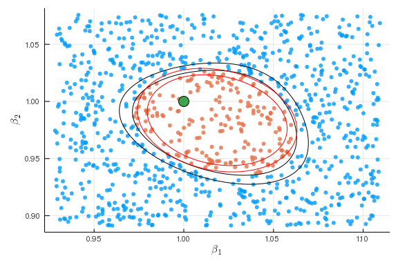
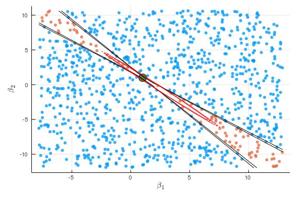
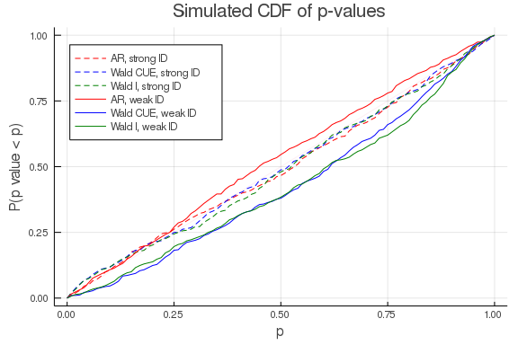
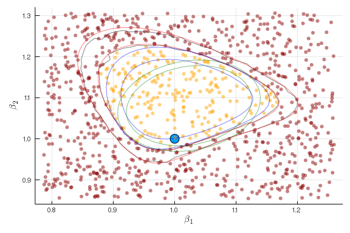
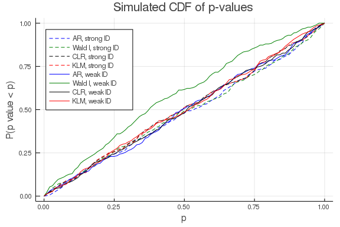

This work is licensed under a Creative Commons Attribution-ShareAlike 4.0 International License
About this document¶
This document was created using Weave.jl. The code is available in on github. The same document generates both static webpages and associated jupyter notebook.
Introduction¶
Many, perhaps most, estimators in econometrics are extrumem estimators. That is, many estimators are defined by
where $\hat{Q}_n(\theta)$ is some objective function that depends on data. Examples include maximum likelihood,
GMM,
and nonlinear least squares
See [^1] for more details and examples.
Example: logit¶
As a simple example, let’s look look at some code for estimating a logit.
using Distributions, Optim, BenchmarkTools
import ForwardDiff
function simulate_logit(observations, β)
x = randn(observations, length(β))
y = (x*β + rand(Logistic(), observations)) .>= 0.0
return((y=y,x=x))
end
function logit_likelihood(β,y,x)
p = map(xb -> cdf(Logistic(),xb), x*β)
sum(log.(ifelse.(y, p, 1.0 .- p)))
end
n = 500
k = 3
β0 = ones(k)
(y,x) = simulate_logit(n,β0)
Q = β -> -logit_likelihood(β,y,x)
Q(β0)
248.3909270836687
Now we maximize the likelihood using a few different algorithms from Optim.jl
@btime optimize(Q, zeros(k), NelderMead())
2.030 ms (1510 allocations: 1.98 MiB)
@btime optimize(Q, zeros(k), BFGS(), autodiff = :forward)
693.795 μs (544 allocations: 1.26 MiB)
@btime optimize(Q, zeros(k), NewtonTrustRegion(), autodiff =:forward)
1.243 ms (414 allocations: 1.46 MiB)
* Status: success
* Candidate solution
Minimizer: [9.77e-01, 1.06e+00, 8.77e-01]
Minimum: 2.476225e+02
* Found with
Algorithm: Newton's Method (Trust Region)
Initial Point: [0.00e+00, 0.00e+00, 0.00e+00]
* Convergence measures
|x - x'| = 2.00e-09 ≰ 0.0e+00
|x - x'|/|x'| = 1.88e-09 ≰ 0.0e+00
|f(x) - f(x')| = 5.68e-14 ≰ 0.0e+00
|f(x) - f(x')|/|f(x')| = 2.30e-16 ≰ 0.0e+00
|g(x)| = 2.68e-15 ≤ 1.0e-08
* Work counters
Seconds run: 0 (vs limit Inf)
Iterations: 6
f(x) calls: 7
∇f(x) calls: 7
∇²f(x) calls: 6
Aside: Reverse mode automatic differentiation¶
For functions $f:\R^n \to \R^m$, the work for forward automatic differentiation increases linearly with $n$. This is because forward automatic differentiation applies the chain rule to each of the $n$ inputs. An alternative, is reverse automatic differentiation. Reverse automatic differentiation is also based on the chain rule, but it works backward from $f$ through intermediate steps back to $x$. The work needed here scales linearly with $m$. Since optimization problems have $m=1$, reverse automatic differentiation can often work well. The downsides of reverse automatic differentiation are that: (1) it can require a large amount of memory and (2) it is more difficult to implement. There are handful of Julia packages that provide reverse automatic differentiation, but they have some limitations in terms of what functions thay can differentiate. Flux.jl and Zygote.jl are two such packages.
using Optim, BenchmarkTools
import Zygote
dQr = β->Zygote.gradient(Q,β)[1]
dQf = β->ForwardDiff.gradient(Q,β)
@show dQr(β0) ≈ dQf(β0)
dQr(β0) ≈ dQf(β0) = true
@btime dQf(β0)
24.646 μs (9 allocations: 47.73 KiB)
@btime dQr(β0)
295.366 μs (14720 allocations: 467.53 KiB)
n = 500
k = 200
β0 = ones(k)
(y,x) = simulate_logit(n,β0)
Q = β -> -logit_likelihood(β,y,x)
dQr = β->Zygote.gradient(Q,β)[1]
dQf = β->ForwardDiff.gradient(Q,β)
@show dQr(β0) ≈dQf(β0)
dQr(β0) ≈ dQf(β0) = true
@btime dQf(β0);
6.393 ms (157 allocations: 2.56 MiB)
@btime dQr(β0);
720.332 μs (14721 allocations: 1.21 MiB)
Review of extremum estimator theory¶
This is based on [^1]. You should already be familiar with this from 627, so we will just state some basic “high-level” conditions for consistency and asymptotic normality.
Consistency¶
Theorem: consistency for extremum estimators
Assume
-
$\hat{Q}_n(\theta)$ converges uniformly in probability to $Q_0(\theta)$
-
$Q_0(\theta)$ is uniquely maximized at $\theta_0$.
-
$\Theta$ is compact and $Q_0(\theta)$ is continuous.
Then $\hat{\theta} \inprob \theta_0$
Asymptotic normality¶
Theorem: asymptotic normality for extremum estimators
Assume
-
$\hat{\theta} \inprob \theta_0$
-
$\theta_0 \in interior(\Theta)$
-
$\hat{Q}n(\theta)$ is twice continuously differentiable in open $N$ containing $\theta$ , and $\sup \Vert \nabla^2 \hat{Q}_n(\theta) - H(\theta) \Vert \inprob 0$ with $H(\theta_0)$ nonsingular
-
$\sqrt{n} \nabla \hat{Q}_n(\theta_0) \indist N(0,\Sigma)$
Then $\sqrt{n} (\hat{\theta} - \theta_0) \indist N\left(0,H^{-1} \Sigma H^{-1} \right)$
Implementing this in Julia using automatic differentiation is straightforward.
function logit_likei(β,y,x)
p = map(xb -> cdf(Logistic(),xb), x*β)
log.(ifelse.(y, p, 1.0 .- p))
end
function logit_likelihood(β,y,x)
mean(logit_likei(β,y,x))
end
n = 1000
k = 3
β0 = ones(k)
(y,x) = simulate_logit(n,β0)
Q = β -> -logit_likelihood(β,y,x)
optres = optimize(Q, zeros(k), NewtonTrustRegion(), autodiff =:forward)
βhat = optres.minimizer
function asymptotic_variance(Q,dQi, θ)
gi = dQi(θ)
Σ = gi'*gi/size(gi)[1]
H = ForwardDiff.hessian(Q,θ)
invH = inv(H)
(variance=invH*Σ*invH, Σ=Σ, invH=invH)
end
avar=asymptotic_variance(θ->logit_likelihood(θ,y,x),
θ->ForwardDiff.jacobian(β->logit_likei(β,y,x),θ),βhat)
display( avar.variance/n)
3×3 Array{Float64,2}:
0.00750534 0.00247556 0.00168701
0.00247556 0.00809588 0.00206969
0.00168701 0.00206969 0.00698917
display( -avar.invH/n)
3×3 Array{Float64,2}:
0.00729341 0.00204155 0.00169905
0.00204155 0.00798637 0.00231022
0.00169905 0.00231022 0.00741732
display(inv(avar.Σ)/n)
3×3 Array{Float64,2}:
0.00710858 0.00162523 0.00170701
0.00162523 0.00791952 0.00257094
0.00170701 0.00257094 0.00787568
For maximum likelihood, the information equality says $-H = \Sigma$, so the three expressions above have the same probability limit, and are each consistent estimates of the variance of $\hat{\theta}$.
The code above is for demonstration and learning. If we really wanted to estimate a logit for research, it would be better to use a well-tested package. Here’s how to estimate a logit using GLM.jl.
using GLM, DataFrames
df = DataFrame(x)
df[:y] = y
glmest=glm(@formula(y ~ -1 + x1+x2+x3), df, Binomial(),LogitLink())
display( glmest)
StatsModels.TableRegressionModel{GeneralizedLinearModel{GLM.GlmResp{Array{F
loat64,1},Binomial{Float64},LogitLink},GLM.DensePredChol{Float64,Cholesky{F
loat64,Array{Float64,2}}}},Array{Float64,2}}
y ~ 0 + x1 + x2 + x3
Coefficients:
──────────────────────────────────────────────────────────────────
Estimate Std. Error z value Pr(>|z|) Lower 95% Upper 95%
──────────────────────────────────────────────────────────────────
x1 0.797399 0.0853968 9.33758 <1e-20 0.630024 0.964773
x2 1.03246 0.0893601 11.5539 <1e-30 0.857319 1.2076
x3 0.894403 0.0861181 10.3858 <1e-24 0.725614 1.06319
──────────────────────────────────────────────────────────────────
display( vcov(glmest))
3×3 Array{Float64,2}:
0.00729261 0.00204095 0.00169854
0.00204095 0.00798523 0.00230951
0.00169854 0.00230951 0.00741632
Delta method¶
In many models, we are interested in some transformation of the parameters in addition to the parameters themselves. For example, in a logit, we might want to report marginal effects in addition to the coefficients. In structural models, we typically use the parameter estimates to conduct counterfactual simulations. In many situations we are more interested these transformation(s) of parameters than in the parameters themselves. The delta method is one convenient way to approximate the distribution of transformations of the model parameters.
Theorem: Delta method
Assume:
-
$\sqrt{n} (\hat{\theta} - \theta_0) \indist N(0,\Omega)$
-
$g: \R^k \to \R^m$ is continuously differentiable
Then $\sqrt{n}(g(\hat{\theta}) - g(\theta_0)) \indist N(0, \nabla g(\theta_0)^T \Omega \nabla g(\theta_0)$
The following code uses the delta method to plot a 90% pointwise confidence band around the estimate marginal effect of one of the regressors.
using LinearAlgebra
function logit_mfx(β,x)
ForwardDiff.jacobian(β-> map(xb -> cdf(Logistic(),xb), x*β), β)
end
function delta_method(g, θ, Ω)
dG = ForwardDiff.jacobian(θ->g(θ),θ)
dG*Ω*dG'
end
nfx = 100
xmfx = zeros(nfx,3)
xmfx[:,1] .= -3.0:(6.0/(nfx-1)):3.0
mfx = logit_mfx(βhat,xmfx)
vmfx = delta_method(β->logit_mfx(β,xmfx)[:,1], βhat, avar.variance/n)
sdfx = sqrt.(diag(vmfx))
using Plots, LaTeXStrings
Plots.gr()
plot(xmfx[:,1],mfx[:,1],ribbon=quantile(Normal(),0.95)*sdfx,fillalpha=0.5,
xlabel=L"x_1", ylabel=L"\frac{\partial}{\partial x_1}P(y=1|x)", legend=false,
title="Marginal effect of x[1] when x[2:k]=0")

The same approach can be used to compute standard errors and confidence regions for the results of more complicated counterfactual simulations, as long as the associated simulations are smooth functions of the parameters. However, sometimes it might be more natural to write simulations with outcomes that are not smooth in the parameters. For example, the following code uses simulation to calculate the change in the probability of $y$ from adding 0.1 to $x$.
function counterfactual_sim(β, x, S)
function onesim()
e = rand(Logistic(), size(x)[1])
baseline= (x*β .+ e .> 0)
counterfactual= ((x.+0.1)*β .+ e .> 0)
mean(counterfactual.-baseline)
end
mean([onesim() for s in 1:S])
end
ForwardDiff.gradient(β->counterfactual_sim(β,x,10),βhat)
3-element Array{Float64,1}:
0.0
0.0
0.0
Here, the gradient is 0 because the simulation function is a step-function. In this situation, an alternative to the delta method is the simulation based approach of [^2]. The procedure is quite simple. Suppose $\sqrt{n}(\hat{\theta} - \theta_0) \indist N(0,\Omega)$, and you want to an estimate of the distribution of $g(\theta)$. Repeatedly draw $\theta_s \sim N(\hat{\theta}, \Omega/n)$ and compute $g(\theta_s)$. Use the distribution of $g(\theta_s)$ for inference. For example, a 90% confidence interval for $g(\theta)$ would be the 5%-tile of $g(\theta_s)$ to the 95%-tile of $g(\theta_s)$.
Ω = avar.variance/n
Ω = (Ω+Ω')/2 # otherwise, it's not exactly symmetric due to
# floating point roundoff
function kr_confint(g, θ, Ω, simulations; coverage=0.9)
θs = [g(rand(MultivariateNormal(θ,Ω))) for s in 1:simulations]
quantile(θs, [(1.0-coverage)/2, coverage + (1.0-coverage)/2])
end
@show kr_confint(β->counterfactual_sim(β,x,10), βhat, Ω, 1000)
kr_confint((β->begin
#= none:2 =#
counterfactual_sim(β, x, 10)
end), βhat, Ω, 1000) = [0.04289499999999999, 0.051500000000000004]
# a delta method based confidence interval for the same thing
function counterfactual_calc(β, x)
baseline = cdf.(Logistic(), x*β)
counterfactual= cdf.(Logistic(), (x.+0.1)*β)
return([mean(counterfactual.-baseline)])
end
v = delta_method(β->counterfactual_calc(β,x), βhat, Ω)
ghat = counterfactual_calc(βhat,x)
@show [ghat + sqrt(v)*quantile(Normal(),0.05), ghat +
sqrt(v)*quantile(Normal(),0.95)]
[ghat + sqrt(v) * quantile(Normal(), 0.05), ghat + sqrt(v) * quantile(Norma
l(), 0.95)] = Array{Float64,2}[[0.04441465819074853], [0.04983451027386987]
]
2-element Array{Array{Float64,2},1}:
[0.04441465819074853]
[0.04983451027386987]
Alternative approaches to inference¶
Identification robust inference¶
As discussed in section 9 of [^1], there are three classic types of statistics for testing restrictions on parameters. Suppose you want to test $H_0: a(\theta) = 0$. Let $\hat{\theta}$ denote the unrestricted estimate, and let $\hat{\theta}^r$ denote the estimate of $\theta$ subject to the restriction. Wald test-statistics are based on $\hat{\theta}-\hat{\theta}^r$. Lagrange multiplier tests look at the distribution of the estimated Lagrange multiplier. Likelihood ratio (aka distance metric in [^1]) tests look at $Q_n(\hat{\theta}) - Q_n(\hat{\theta}^r)$. If we consider testing $H_0: \theta = \vartheta$ for some fixed $\vartheta$, then the usual approach based on the asymptotic normality of $\hat{\theta}$ discussed above is exactly the same as the Wald test of this restriction. As discussed by [^1], under standard assumptions, all three testing approaches are asymptotically equivalent. However, the tests can and will differ in finite samples. More importantly, in the face of identification problems, Wald tests tend to break down, while Lagrange multiplier and likelihood ratio style tests can continue to work.
By identification robust, we mean an inference procedure that has correct size regardless of whether identification is strong, weak, or partial. In the asymptotic normality of extremum estimators theorem above, non-strong identification will create problems for assumption 3, in particular the assumption that the Hessian is non-singular. For this section, we will focus on GMM estimators. Identification problems most often arrive and have been studied in the context of GMM. Also, it is not difficult to transform other extremum estimators into GMM.
For a GMM objective function of the form: , if we assume:
-
$1/\sqrt{n} \sum_i g_i(\theta_0) \indist N(0,\Sigma)$
-
$1/n \sum_i \nabla g_i(\theta) \inprob E[\nabla g(\theta)]$, $W_n \inprob W$
-
$(D’WD)$ is nonsingular.
then the above theorem for asymptotic normality of extremum estimators implies that where If we additionally assume $W_n \inprob \Sigma^{-1}$, e.g. observations are independent and $W_n = \widehat{Var}(g_i(\theta))^{-1}$, then the asymptotic variance simplifies to $(D’ \Sigma D)^{-1}$.
Anderson-Rubin test¶
As already stated, the assumption that $(D’WD)$ is nonsingular is problematic if we want to allow for identification problems. However, if we assume only that
-
$1/\sqrt{n} \sum_i g_i(\theta_0) \indist N(0,\Sigma)$
-
$W_n \inprob \Sigma^{-1}$
then where $m$ is the number of moments (dimension of $g_i(\theta)$). This is called the Anderson-Rubin test. Note that this result holds without any explicit nonsingular assumption about a Hessian. Hence, there is hope that this result would be true even with identification problems. Indeed, it is. [^3] first proposed using this test statistic for weakly identified GMM estimators. [^4] gives an overview of this test and related tests with a focus on linear IV. [^5]
Typical usage of the AR test is to invert the test to construct a confidence region for $\theta$. For each $\theta \in \Theta$, let and let $c_{\alpha}= \alpha$ quantile of $\chi^2_m$. Then a $\alpha$ confidence region for $\theta_0$ is
Example: IV logit demand¶
A common way to model demand for differentiated products is to aggregate an individual discrete choice. We will look at the simplest such model here. This is a model for when we have data on product market shares, $y_j$, and product attributes, $x_j$, for many different markets. In concrete applications, markets may be defined geographically, temporally, by consumer segment, or some combination thereof.
Consider a single good, which consumers chooose to purchase or not. Consumer $i$’s utility from consuming the good is where $x_j$ are the observed attributes of the good in market $j$, $\xi_j$ is a market level demand shock, and $\epsilon_{ij}$ is an individual taste shock. Person $i$ purchases the good if $u_{ij} \geq 0$. Aggregating individual purchases implies that the market share in market $j$ is where $F_{-\epsilon}$ is the CDF of $-\epsilon$.
We assume that $\epsilon_{ij}$ is independent of $x_j$ and $\xi_j$. Typically, $x_j$ includes some easily adjusted product attributes, such as price, so we want to allow $x_j$ to be correlated with $\xi_j$. Assume that we have some instruments $z_j$ such that $\Er[\xi_j z_j]=0.$ We can write this moment condition in terms of observables and $\beta$ as This is the moment condition we will use to estimate $\beta$.
First, we will simulate the model, then estimate it. This code looks at three variants of GMM. First, it computes an estimate with $W_n = I$. Second, it computes an effeciently weighted estimated with $W_n = \widehat{Var}( \nabla g_i(\hat{\theta}{(1)}) )$ , where $\hat{\theta}$ is the first estimate. Third, it computes the continuous updating estimator, which uses $AR(\theta)$ as the objective function ( $W$ is “continuously updated” to be $\widehat{Var}( \nabla g_i(\theta))$ ).
using Optim, ForwardDiff, LinearAlgebra, Distributions
function simulate_ivshare(n,β,γ,ρ)
z = randn(n, size(γ)[1])
endo = randn(n, length(β))
x = z*γ .+ endo
ξ = rand(Normal(0,sqrt((1.0-ρ^2))),n).+endo[:,1]*ρ
y = cdf.(Logistic(), x*β .+ ξ)
return((y=y,x=x,z=z))
end
n = 100
k = 2
iv = 3
β0 = ones(k)
π0 = vcat(5*I,ones(iv-k,k))
ρ = 0.5
(y,x,z) = simulate_ivshare(n,β0,π0,ρ)
function gi_ivshare(β,y,x,z)
ξ = quantile.(Logistic(),y) .- x*β
ξ.*z
end
function gmmObj(θ,gi,W)
g = gi(θ)
m = mean(g,dims=1)
(size(g)[1]*( m*W*m')[1]) # return scalar, not 1x1 array
end
function gmmVar(θ,gi,W)
g = gi(θ)
n = size(g)[1]
D = ForwardDiff.jacobian(θ->mean(gi(θ),dims=1),θ)
Σ = cov(gi(θ))
1/n*inv(D'*W*D)*(D'*W*Σ*W*D)*inv(D'*W*D)
end
function ar(θ,gi)
gmmObj(θ,gi,inv(cov(gi(θ))))
end
ar (generic function with 1 method)
opt1 = optimize(θ->gmmObj(θ, β->gi_ivshare(β,y,x,z) ,I),
zeros(k), BFGS(), autodiff =:forward)
@show β1 = opt1.minimizer
β1 = opt1.minimizer = [1.0184676226720062, 0.9855590553520275]
display(gmmVar(β1, β->gi_ivshare(β,y,x,z),I))
2×2 Array{Float64,2}:
0.000329369 -6.29812e-5
-6.29812e-5 0.000345304
opteff = optimize(θ->gmmObj(θ,β->gi_ivshare(β,y,x,z),inv(cov(gi_ivshare(β1,y,x,z)))),
zeros(k), BFGS(), autodiff =:forward)
@show βeff = opteff.minimizer
βeff = opteff.minimizer = [1.0187398111366475, 0.9836323732386845]
display(gmmVar(βeff,β->gi_ivshare(β,y,x,z),inv(cov(gi_ivshare(β1,y,x,z)))))
2×2 Array{Float64,2}:
0.000329704 -6.37946e-5
-6.37946e-5 0.000341952
ar_ivshare = θ->ar(θ,β->gi_ivshare(β,y,x,z))
optcue = optimize(ar_ivshare,
β0, BFGS(), autodiff =:forward)
@show βcue = optcue.minimizer
βcue = optcue.minimizer = [1.0186310931605347, 0.9836178151054701]
Vcue = gmmVar(βcue,β->gi_ivshare(β,y,x,z),inv(cov(gi_ivshare(βcue,y,x,z))))
display(Vcue)
2×2 Array{Float64,2}:
0.000329768 -6.37715e-5
-6.37715e-5 0.000341908
Now we compare confidence regions based on the Wald test, and from inverting the AR statistic.
using Plots
function plot_cr(β,V, AR)
lb = β - sqrt.(diag(V))*5
ub = β + sqrt.(diag(V))*5
ntest = 1000
βtest = [rand(length(β)).*(ub-lb) .+ lb for i in 1:ntest]
arstat = AR.(βtest)
βtest = vcat(βtest'...)
crit = quantile(Chisq(size(z)[2]), 0.9)
scatter(βtest[:,1],βtest[:,2], group=(arstat.<crit), legend=false,
markersize=4, markerstrokewidth=0.0, seriesalpha=0.8,
xlabel=L"\beta_1", ylabel=L"\beta_2")
scatter!([β0[1]], [β0[2]], markersize=8)
b1 = lb[1]:(ub[1]-lb[1])/100:ub[1]
b2 = lb[2]:(ub[2]-lb[2])/100:ub[2]
arf = (a,b) -> cdf(Chisq(size(z)[2]),AR([a,b]))
contour!(b1,b2,arf, levels = [0.9, 0.95],
contour_labels=false, legend=false,
label="AR CI",
c=cgrad([:black,:black],[0.0,1.0]))
waldf = (a,b) -> cdf(Chisq(length(βcue)),([a,b]-βcue)'*inv(Vcue)*([a,b]-βcue))
contour!(b1,b2,waldf, levels = [0.9, 0.95],
contour_labels=false,
label="Wald CI", c=cgrad([:red,:red], [0.0,1.0]),
legend=false)
end
plot_cr(βcue,Vcue, ar_ivshare)

The two confidence regions above are not too different because the simulated data was strongly identified. Let’s see what happens when we change the simulation to have weaker identification.
# make π0 nearly rank-deficient
π0 = ones(iv,k) .+ vcat(I*0.05,zeros(iv-k,k))
ρ = 0.5
(y,x,z) = simulate_ivshare(n,β0,π0,ρ)
ar_ivshare = θ->ar(θ,β->gi_ivshare(β,y,x,z))
optcue = optimize(ar_ivshare,
β0, BFGS(), autodiff =:forward)
@show βcue = optcue.minimizer
βcue = optcue.minimizer = [1.316095443727833, 0.6049672327222234]
Vcue = gmmVar(βcue,β->gi_ivshare(β,y,x,z),inv(cov(gi_ivshare(βcue,y,x,z))))
display(Vcue)
2×2 Array{Float64,2}:
0.0987636 -0.103025
-0.103025 0.110616
plot_cr(βcue,Vcue, ar_ivshare)

Now the confidence regions are dramatically different. Does either one have correct coverage? Let’s simulate to find the size of the AR and Wald tests of $H_0 : \beta = \beta_0$
S = 500
n = 100
function sim_p(π0)
(y,x,z) = simulate_ivshare(n,β0,π0,ρ)
opt1 = optimize(θ->gmmObj(θ, β->gi_ivshare(β,y,x,z) ,I),
β0, BFGS(), autodiff =:forward)
if (!opt1.g_converged)
opt1 = optimize(θ->gmmObj(θ, β->gi_ivshare(β,y,x,z) ,I),
β0, NewtonTrustRegion(), autodiff =:forward)
end
β1 = opt1.minimizer
V1 = gmmVar(β1,β->gi_ivshare(β,y,x,z),I)
optcue = optimize(θ->ar(θ,β->gi_ivshare(β,y,x,z)),
β0, BFGS(), autodiff =:forward)
if (!optcue.g_converged)
optcue = optimize(θ->ar(θ,β->gi_ivshare(β,y,x,z)),
β0, NewtonTrustRegion(), autodiff =:forward)
end
if (!optcue.g_converged)
display(optcue)
βcue = deepcopy(β1)
else
βcue = optcue.minimizer
end
Vcue =
gmmVar(βcue,β->gi_ivshare(β,y,x,z),inv(cov(gi_ivshare(βcue,y,x,z))))
arp = θ->(1.0-cdf(Chisq(size(z)[2]),ar(θ,β->gi_ivshare(β,y,x,z))))
waldp = θ->(1.0-cdf(Chisq(length(βcue)),(θ-βcue)'*inv(Vcue)*(θ-βcue)))
waldp1 = θ->(1.0-cdf(Chisq(length(β1)),(θ-β1)'*inv(V1)*(θ-β1)))
[arp(β0) waldp(β0) waldp1(β0)]
end
πweak = ones(iv,k) .+ vcat(diagm(0=>fill(0.01,k)),zeros(iv-k,k))
πstrong = vcat(5*diagm(0=>ones(k)),ones(iv-k,k))
@time pweak=vcat([sim_p(πweak) for s in 1:S]...)
* Status: failure (reached maximum number of iterations) (line search fail
ed)
* Candidate solution
Minimizer: [-4.93e+03, 5.22e+03]
Minimum: 1.584334e+00
* Found with
Algorithm: Newton's Method (Trust Region)
Initial Point: [1.00e+00, 1.00e+00]
* Convergence measures
|x - x'| = 1.77e+00 ≰ 0.0e+00
|x - x'|/|x'| = 3.40e-04 ≰ 0.0e+00
|f(x) - f(x')| = 5.95e-08 ≰ 0.0e+00
|f(x) - f(x')|/|f(x')| = 3.75e-08 ≰ 0.0e+00
|g(x)| = 1.77e-08 ≰ 1.0e-08
* Work counters
Seconds run: 0 (vs limit Inf)
Iterations: 1000
f(x) calls: 1001
∇f(x) calls: 1001
∇²f(x) calls: 1001
* Status: failure (reached maximum number of iterations) (line search fail
ed)
* Candidate solution
Minimizer: [-4.41e+03, 4.23e+03]
Minimum: 1.177053e-01
* Found with
Algorithm: Newton's Method (Trust Region)
Initial Point: [1.00e+00, 1.00e+00]
* Convergence measures
|x - x'| = 1.49e+00 ≰ 0.0e+00
|x - x'|/|x'| = 3.39e-04 ≰ 0.0e+00
|f(x) - f(x')| = 4.29e-08 ≰ 0.0e+00
|f(x) - f(x')|/|f(x')| = 3.64e-07 ≰ 0.0e+00
|g(x)| = 1.49e-08 ≰ 1.0e-08
* Work counters
Seconds run: 0 (vs limit Inf)
Iterations: 1000
f(x) calls: 1001
∇f(x) calls: 1001
∇²f(x) calls: 1001
* Status: failure (reached maximum number of iterations) (line search fail
ed)
* Candidate solution
Minimizer: [-7.04e+03, 7.38e+03]
Minimum: 1.398058e+00
* Found with
Algorithm: Newton's Method (Trust Region)
Initial Point: [1.00e+00, 1.00e+00]
* Convergence measures
|x - x'| = 2.52e+00 ≰ 0.0e+00
|x - x'|/|x'| = 3.41e-04 ≰ 0.0e+00
|f(x) - f(x')| = 1.21e-07 ≰ 0.0e+00
|f(x) - f(x')|/|f(x')| = 8.66e-08 ≰ 0.0e+00
|g(x)| = 2.52e-08 ≰ 1.0e-08
* Work counters
Seconds run: 0 (vs limit Inf)
Iterations: 1000
f(x) calls: 1001
∇f(x) calls: 1001
∇²f(x) calls: 1001
* Status: failure (reached maximum number of iterations) (line search fail
ed)
* Candidate solution
Minimizer: [-4.05e+03, 4.24e+03]
Minimum: 1.154453e-01
* Found with
Algorithm: Newton's Method (Trust Region)
Initial Point: [1.00e+00, 1.00e+00]
* Convergence measures
|x - x'| = 1.44e+00 ≰ 0.0e+00
|x - x'|/|x'| = 3.39e-04 ≰ 0.0e+00
|f(x) - f(x')| = 3.94e-08 ≰ 0.0e+00
|f(x) - f(x')|/|f(x')| = 3.42e-07 ≰ 0.0e+00
|g(x)| = 1.43e-08 ≰ 1.0e-08
* Work counters
Seconds run: 0 (vs limit Inf)
Iterations: 1000
f(x) calls: 1001
∇f(x) calls: 1001
∇²f(x) calls: 1001
* Status: failure (reached maximum number of iterations) (line search fail
ed)
* Candidate solution
Minimizer: [-3.45e+03, 3.58e+03]
Minimum: 6.532171e-01
* Found with
Algorithm: Newton's Method (Trust Region)
Initial Point: [1.00e+00, 1.00e+00]
* Convergence measures
|x - x'| = 1.21e+00 ≰ 0.0e+00
|x - x'|/|x'| = 3.38e-04 ≰ 0.0e+00
|f(x) - f(x')| = 2.82e-08 ≰ 0.0e+00
|f(x) - f(x')|/|f(x')| = 4.32e-08 ≰ 0.0e+00
|g(x)| = 1.21e-08 ≰ 1.0e-08
* Work counters
Seconds run: 0 (vs limit Inf)
Iterations: 1000
f(x) calls: 1001
∇f(x) calls: 1001
∇²f(x) calls: 1001
* Status: failure (reached maximum number of iterations) (line search fail
ed)
* Candidate solution
Minimizer: [-3.05e+03, 3.82e+03]
Minimum: 1.335072e+00
* Found with
Algorithm: Newton's Method (Trust Region)
Initial Point: [1.00e+00, 1.00e+00]
* Convergence measures
|x - x'| = 1.29e+00 ≰ 0.0e+00
|x - x'|/|x'| = 3.38e-04 ≰ 0.0e+00
|f(x) - f(x')| = 2.74e-08 ≰ 0.0e+00
|f(x) - f(x')|/|f(x')| = 2.05e-08 ≰ 0.0e+00
|g(x)| = 1.29e-08 ≰ 1.0e-08
* Work counters
Seconds run: 0 (vs limit Inf)
Iterations: 1000
f(x) calls: 1001
∇f(x) calls: 1001
∇²f(x) calls: 1001
11.187416 seconds (22.54 M allocations: 2.593 GiB, 19.79% gc time)
@time pstrong=vcat([sim_p(πstrong) for s in 1:S]...)
1.506219 seconds (1.06 M allocations: 729.875 MiB, 22.95% gc time)
pgrid = 0:0.01:1
plot(pgrid, p->mean( pstrong[:,1] .<= p), legend=:topleft,
label="AR, strong ID", style=:dash, color=:red,
xlabel="p", ylabel="P(p value < p)",
title="Simulated CDF of p-values")
plot!(pgrid, p->mean( pstrong[:,2] .<= p),
label="Wald CUE, strong ID", style=:dash, color=:blue)
plot!(pgrid, p->mean( pstrong[:,3] .<= p),
label="Wald I, strong ID", style=:dash, color=:green)
plot!(pgrid, p->mean( pweak[:,1] .<= p),
label="AR, weak ID", style=:solid, color=:red)
plot!(pgrid, p->mean( pweak[:,2] .<= p),
label="Wald CUE, weak ID", style=:solid, color=:blue)
plot!(pgrid, p->mean( pweak[:,3] .<= p),
label="Wald I, weak ID", style=:solid, color=:green)
plot!(pgrid,pgrid,alpha=0.1, label="")

We see that the Wald test has fairly large size distortions, even when identification is strong. The AR test has approximately correct size for both the weakly and strongly identified DGP.
Other identification robust tests¶
There are also identification robust versions of likelihood ratio and lagrange multiplier test. [^6] proposed a conditional likelihood ratio (CLR) test for weakly identified linear IV models. [^7] developed a Lagrange multiplier (often called the KLM) test and extended Moreira’s CLR test to weakly identified GMM models. More recently, [^8] and [^9] showed the validity of these tests under more general conditions. These tests are somewhat more complicated than the AR test, but they have the advantage that they are often more powerful. The AR test statistic has a $\chi^2_{m}$ distribution, where $m$ is the number of moments. The CLR and KLM statistics under strong identification have $\chi^2_k$ distributions (as does the Wald statistic), where $k$ is the number of parameters. Consequently, when the model is overidentified, the CLR and LM tests are more powerful than the AR test.
Here is an implementation of the KLM and CLR statistics. The names of variables roughly follows the notation of [^9].
using ForwardDiff, Plots, Optim
function statparts(θ,gi)
# compute common components of klm, rk, & clr stats
# follows notation of Andrews & Guggenberger 2017, section 3.1
function P(A::AbstractMatrix) # projection matrix
A*pinv(A'*A)*A'
end
giθ = gi(θ)
p = length(θ)
(n, k) = size(giθ)
Ω = cov(giθ)
gn=mean(gi(θ), dims=1)'
#G = ForwardDiff.jacobian(θ->mean(gi(θ),dims=1),θ)
Gi= ForwardDiff.jacobian(gi,θ)
Gi = reshape(Gi, n , k, p)
G = mean(Gi, dims=1)
Γ = zeros(eltype(G),p,k,k)
D = zeros(eltype(G),k, p)
for j in 1:p
for i in 1:n
Γ[j,:,:] += (Gi[i,:,j] .- G[1,:,j]) * giθ[i,:]'
end
Γ[j,:,:] ./= n
D[:,j] = G[1,:,j] - Γ[j,:,:]*inv(Ω)*gn
end
return(n,k,p,gn, Ω, D, P)
end
function klm(θ,gi)
(n,k,p,gn, Ω, D, P) = statparts(θ,gi)
lm = n*(gn'*Ω^(-1/2)*P(Ω^(-1/2)*D)*Ω^(-1/2)*gn)[1]
end
function clr(θ,gi)
(n,k,p,gn, Ω, D, P) = statparts(θ,gi)
rk = eigmin(n*D'*inv(Ω)*D)
AR = (n*gn'*inv(Ω)*gn)[1]
lm = (n*(gn'*Ω^(-1/2)*P(Ω^(-1/2)*D)*Ω^(-1/2)*gn))[1]
lr = 1/2*(AR - rk + sqrt( (AR-rk)^2 + 4*lm*rk))
# simulate to find p-value
S = 5000
function randc(k,p,r,S)
χp = rand(Chisq(p),S)
χkp = rand(Chisq(k-p),S)
0.5.*(χp .+ χkp .- r .+
sqrt.((χp .+ χkp .- r).^2 .+ 4 .* χp.*r))
end
csim = randc(k,p,rk,S)
pval = mean(csim.<=lr)
end
clr (generic function with 1 method)
function plot_cr(β,V, tests::AbstractArray{Function}, labels; ngrid=30)
lb = β - sqrt.(diag(V))*5
ub = β + sqrt.(diag(V))*5
fig=scatter([β0[1]], [β0[2]], markersize=8, legend=false,
xlabel=L"\beta_1", ylabel=L"\beta_2")
ntest = 1000
βtest = [rand(2).*(ub-lb) .+ lb for i in 1:ntest]
pval = tests[1].(βtest)
βtest = vcat(βtest'...)
crit = 0.9
fig=scatter!(βtest[:,1],βtest[:,2], group=(pval.<crit), legend=false,
markersize=4, markerstrokewidth=0.0, seriesalpha=0.5,
palette=:heat)
b1 = lb[1]:(ub[1]-lb[1])/ngrid:ub[1]
b2 = lb[2]:(ub[2]-lb[2])/ngrid:ub[2]
colors = [:black, :red, :blue, :green]
for t in 1:length(tests)
fig=contour!(b1,b2,(a,b)->tests[t]([a,b]),
levels = [0.9, 0.95],
contour_labels=false, legend=false,
label = labels[t],
c=cgrad([colors[t],colors[t]],[0.0,1.0]))
end
fig
end
plot_cr (generic function with 2 methods)
Here’s what the confidence regions look like when identification is fairly weak. The green lines are the Wald confidence region, blue is AR, red is KLM, and black is CLR.
n = 50
k = 2
iv =3
π0 = vcat(0.1*diagm(0=>ones(k)),0.2*ones(iv-k,k))
ρ = 0.5
(y,x,z) = simulate_ivshare(n,β0,π0,ρ)
opt1 = optimize(θ->gmmObj(θ, β->gi_ivshare(β,y,x,z) ,I),
β0, BFGS(), autodiff =:forward)
β1 = opt1.minimizer
V1 = gmmVar(β1,β->gi_ivshare(β,y,x,z),I)
pklm = θ->cdf(Chisq(length(βcue)),klm(θ, β->gi_ivshare(β,y,x,z)))
par = θ->cdf(Chisq(size(z)[2]), ar(θ, β->gi_ivshare(β,y,x,z)))
pclr = θ->clr(θ, β->gi_ivshare(β,y,x,z))
pwald = θ -> cdf(Chisq(length(β1)),(θ-β1)'*inv(V1)*(θ-β1))
plot_cr(β1,V1, [pclr, pklm, par, pwald],
["CLR","KLM","AR","Wald"], ngrid=40)
Here’s what the confidence regions look like when identification is stronger.
n = 50
k = 2
iv =3
π0 = vcat(3*diagm(0=>ones(k)),ones(iv-k,k))
ρ = 0.5
(y,x,z) = simulate_ivshare(n,β0,π0,ρ)
opt1 = optimize(θ->gmmObj(θ, β->gi_ivshare(β,y,x,z) ,I),
β0, BFGS(), autodiff =:forward)
β1 = opt1.minimizer
V1 = gmmVar(β1,β->gi_ivshare(β,y,x,z),I)
pklm = θ->cdf(Chisq(length(βcue)),klm(θ, β->gi_ivshare(β,y,x,z)))
par = θ->cdf(Chisq(size(z)[2]), ar(θ, β->gi_ivshare(β,y,x,z)))
pclr = θ->clr(θ, β->gi_ivshare(β,y,x,z))
pwald = θ -> cdf(Chisq(length(β1)),(θ-β1)'*inv(V1)*(θ-β1))
plot_cr(β1,V1, [pclr, pklm, par, pwald],
["CLR","KLM","AR","Wald"], ngrid=40)

Check the size
S = 300
n = 100
function sim_p(π0)
(y,x,z) = simulate_ivshare(n,β0,π0,ρ)
opt1 = optimize(θ->gmmObj(θ, β->gi_ivshare(β,y,x,z) ,I),
β0, BFGS(), autodiff =:forward)
if (!opt1.g_converged)
opt1 = optimize(θ->gmmObj(θ, β->gi_ivshare(β,y,x,z) ,I),
β0, NewtonTrustRegion(), autodiff =:forward)
end
β1 = opt1.minimizer
V1 = gmmVar(β1,β->gi_ivshare(β,y,x,z),I)
pklm = θ->cdf(Chisq(length(β1)),klm(θ, β->gi_ivshare(β,y,x,z)))
par = θ->cdf(Chisq(size(z)[2]), ar(θ, β->gi_ivshare(β,y,x,z)))
pclr = θ->clr(θ, β->gi_ivshare(β,y,x,z))
pwald = θ -> cdf(Chisq(length(β1)),(θ-β1)'*inv(V1)*(θ-β1))
[par(β0) pwald(β0) pclr(β0) pklm(β0)]
end
πweak = ones(iv,k) .+ vcat(diagm(0=>fill(0.01,k)),zeros(iv-k,k))
πstrong = vcat(3*diagm(0=>ones(k)),ones(iv-k,k))
pweak=vcat([sim_p(πweak ) for s in 1:S]...)
pstrong=vcat([sim_p(πstrong) for s in 1:S]...)
pgrid = 0:0.01:1
plot(pgrid, p->mean( pstrong[:,1] .<= p), legend=:topleft,
label="AR, strong ID", style=:dash, color=:blue,
xlabel="p", ylabel="P(p value < p)",
title="Simulated CDF of p-values")
plot!(pgrid, p->mean( pstrong[:,2] .<= p),
label="Wald I, strong ID", style=:dash, color=:green)
plot!(pgrid, p->mean( pstrong[:,3] .<= p),
label="CLR, strong ID", style=:dash, color=:black)
plot!(pgrid, p->mean( pstrong[:,4] .<= p),
label="KLM, strong ID", style=:dash, color=:red)
plot!(pgrid, p->mean( pweak[:,1] .<= p),
label="AR, weak ID", style=:solid, color=:blue)
plot!(pgrid, p->mean( pweak[:,2] .<= p),
label="Wald I, weak ID", style=:solid, color=:green)
plot!(pgrid, p->mean( pweak[:,3] .<= p),
label="CLR, weak ID", style=:solid, color=:black)
plot!(pgrid, p->mean( pweak[:,4] .<= p),
label="KLM, weak ID", style=:solid, color=:red)
plot!(pgrid,pgrid,alpha=0.1, label="")

Bootstrap¶
The bootstrap and related simulation methods can also be used for inference. We will look at these in more detail in the next set of notes.
Bayesian methods¶
Bayesian methods give an alternative approach to both estimation and inference. In some situations, Bayesian methods can be more convenient and/or more numerically robust. In well behaved settings, when viewed from a frequentist perspective, Bayesian methods asymptotically give the same results as MLE (or efficiently weighted GMM in the case of quasi-Bayesian models).